Presented by Alice McPherson-Ståhl
Created by Alice McPherson-Ståhl and Emili Mechilli
BEANS is an interactive musical instrument made from hand built electronic parts. Through our Button Bean and Piano Bean, both of which are connected to an Arduino, you can select beats to be played through loudspeakers. You can then, for either all beats or a selected beat on the screen, change the sound's pitch and speed through separate potentiometers. You can also choose to delete a selected beat by then hitting the big button. The active beats are shown on the screen as well as any changes made to them. With each added beat, the intensity of the visual graphics increases. The light shining on the whole installation also changes with each press of any button. When you feel finished you can hit the big reset button to clear all the active beats. Separately there are two hand built lights to switch on or off.
The BEANS reflection as a designer
BEANS, I would like to say reflects my work as a designer and my personality in that I’m never actually aware of what is enough or bare minimum. This project has taken countless hours to complete, it did get to a point where it was seriously getting a bit too much, I won’t lie. However I find all my hard work has paid off and I was able to stand next to our installation during the Algorave and feel proud of the effort, time and attention to detail I had put in. BEANS is also a reflection of me and Emili as a team with our first angle being super cool electronics and software presented in a girly in your face way. The aesthetics of every component have 100% been created as a cheeky remark to the otherwise sexist tech world. To finish off, BEANS is a perfect example of what can come from a lot of freedom, curiosity and ambition, qualities we both found in each other.
THE ALGORAVE GALLERY
Click on an image or video to see it in a bigger view and with sound!
Feel free to randomly click on the webpage too to see the real time animation increase just like for the real
BEANS!
-
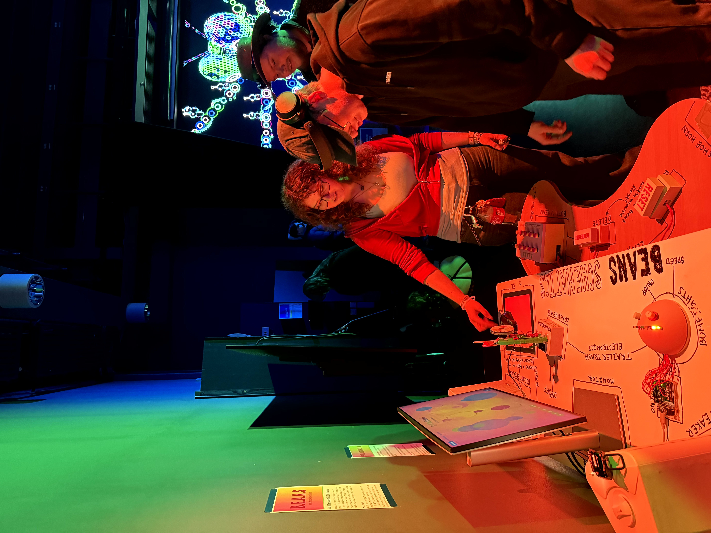
Me showing our installation to my friends
-
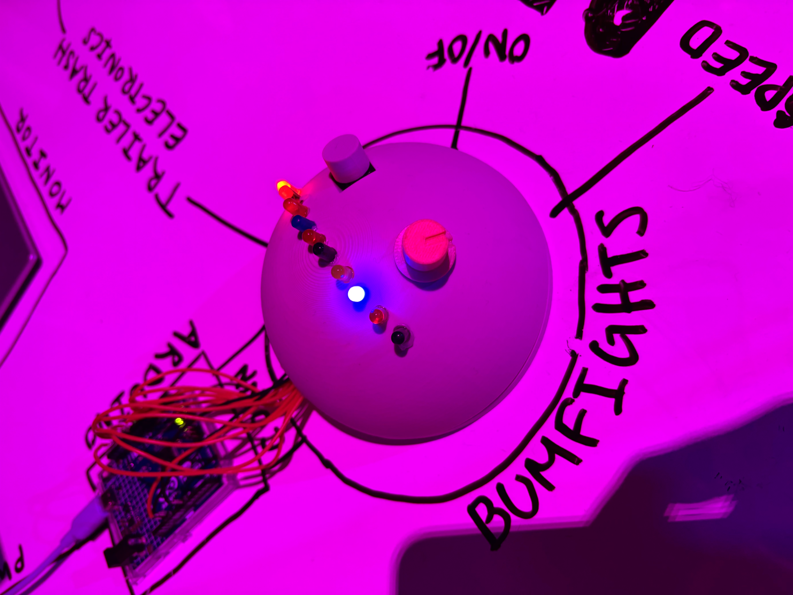
The Bumfights Light
-
A demonstration of how the installation works
-
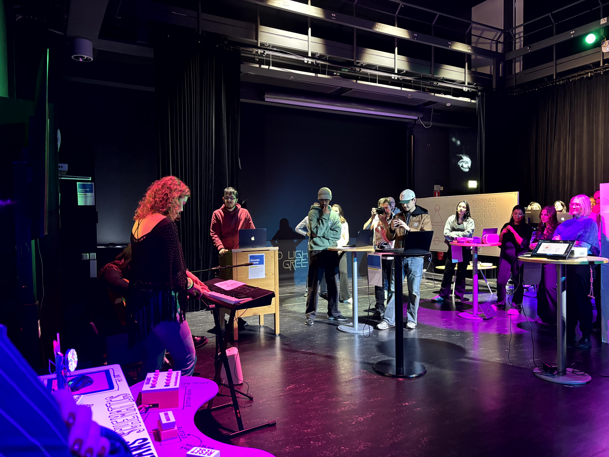
The live performance by Emma2
-
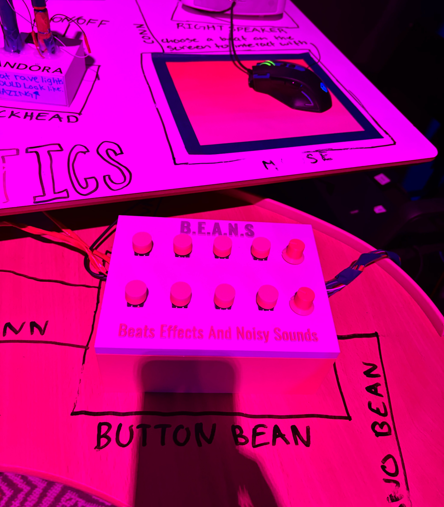
The Button BEAN
-
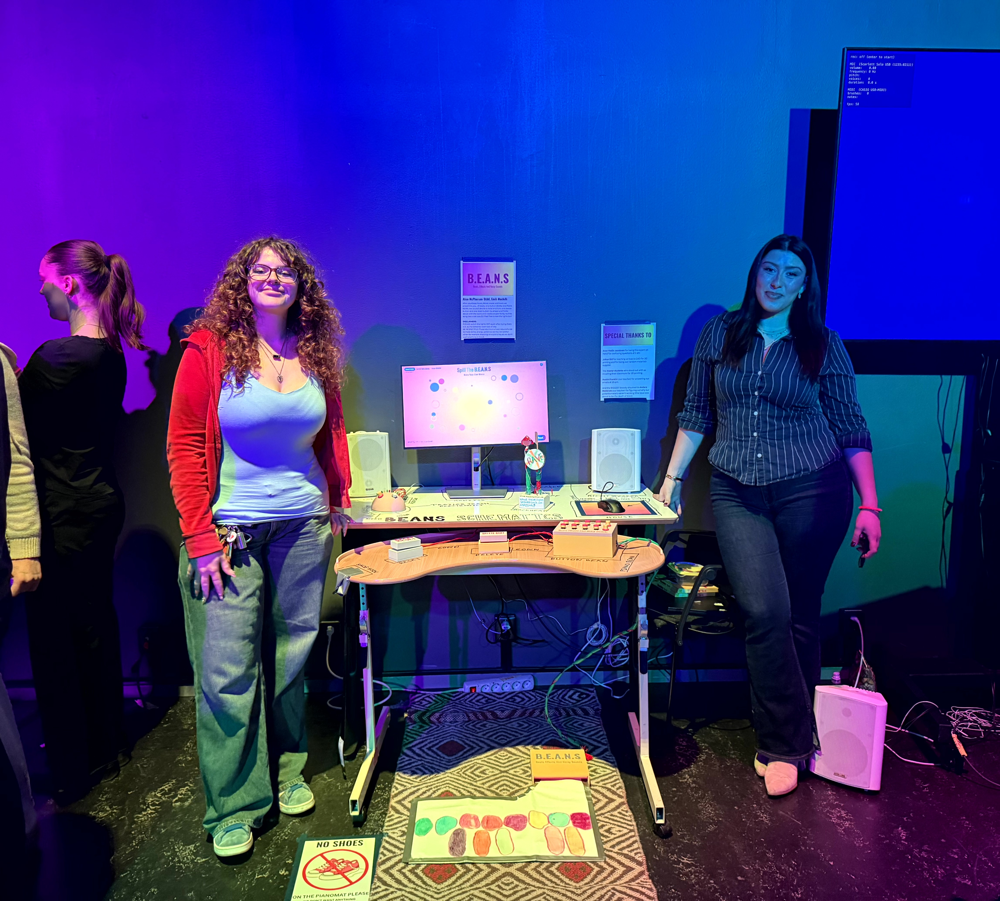
Me and Emili with our installation
-
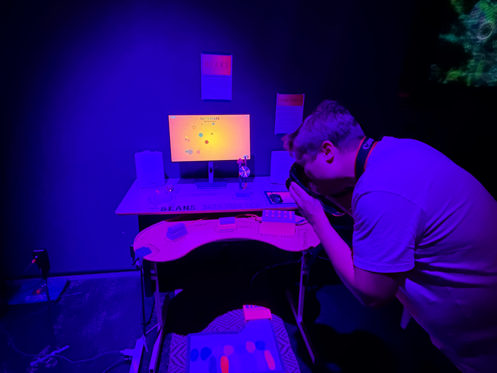
Anders photobombing our setup
-
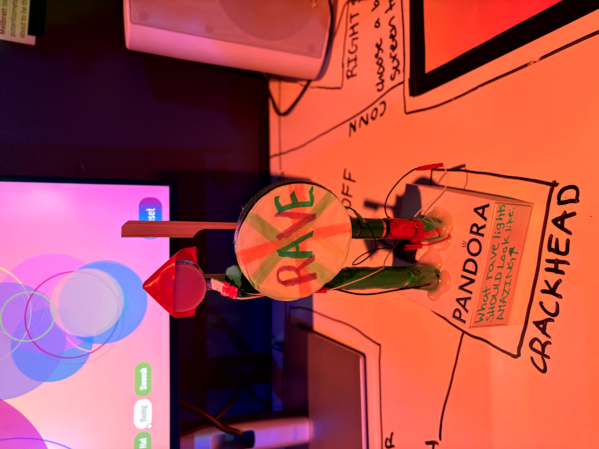
Crackhead
-
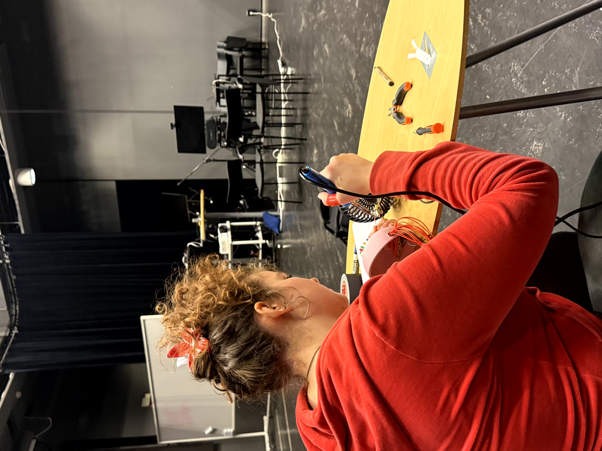
Some last minute soldering during the dress rehersal
-
A user testing our work
-
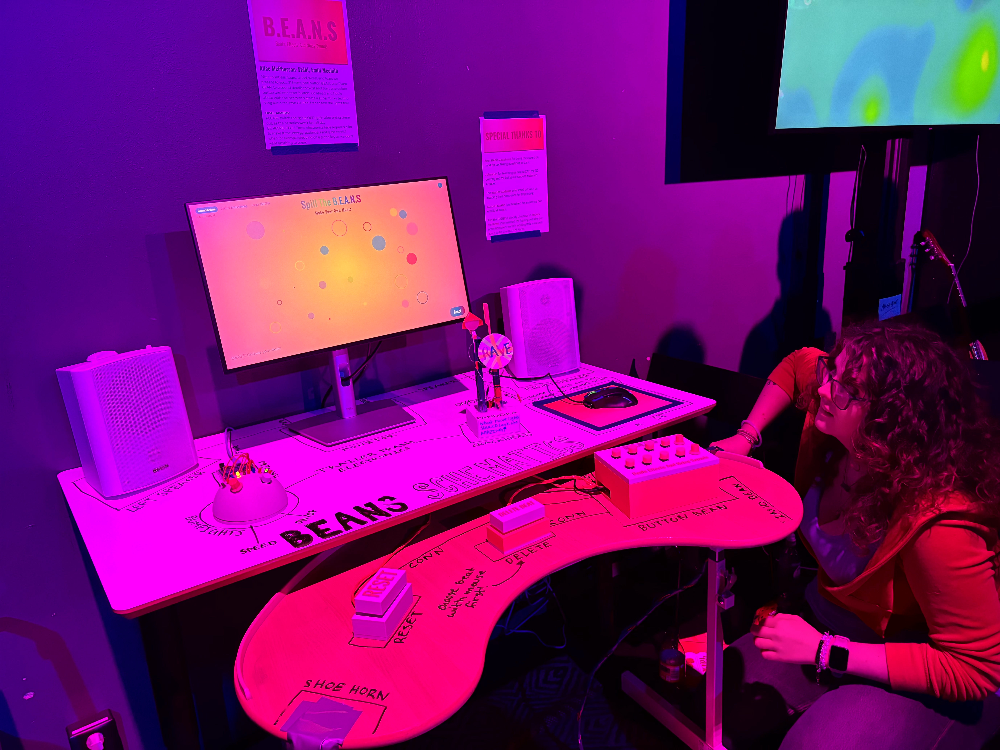
The Setup
-
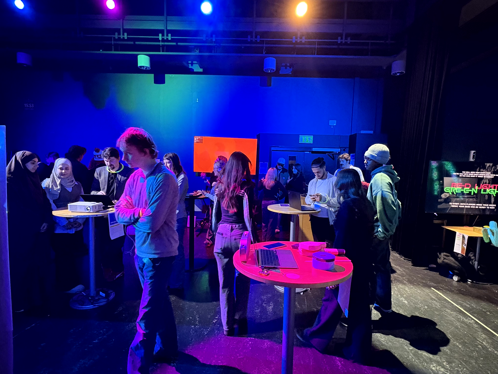
Another pic of the event
-
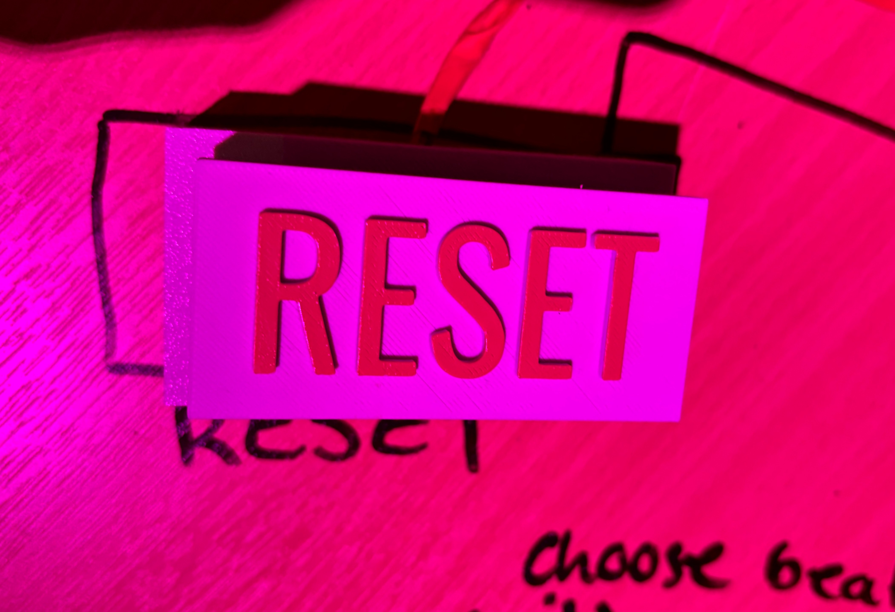
The reset button
AI USE
Which tool
Claude Sonnet 5.5
Purpose and Scope
AI was used to change the animation input to the bubbles from our website. Instead of the previous blue dots moving the mouse now moves the bubbles away. The opening of images and videos in full view was created with code from a previous private project but dealing with issues in integrating the code were solved with help from AI. A prompt used for this was: “denna blanka sidan har en pixi js input som gör blåa prickar på skärmen efter musen. kan du ge mig kod för att ändra den animationen så den ser ut som bollarna på beans sidan?” This was in addition to having linked the index, javascript and css files for the template and our website.
My own contribution
All changes to the CSS such as background, headers and image displays are handwritten. Minor changes to opening images and videos in full view were however made with AI such as using viewheight and viewwidth instead of rem. The text has also been written by me as well as images and videos being supplied by me. I have also done some tweaks to the AIs code, for example the initial speed of the bubbles or the size of the bubbles canvas area.
Source criticism
Due to not doing any larger changes to the website with AI there were no errors or issues that showed up. I could not see any biases either and due to the request only being about code the factual shortcomings were not really a possibility. The only real reason I used AI was simply because I don’t understand how to use or get access to PIXI JS elements such as inputs. In class we only went over the showcase section of the PIXI JS website but not how it can be integrated with our code.